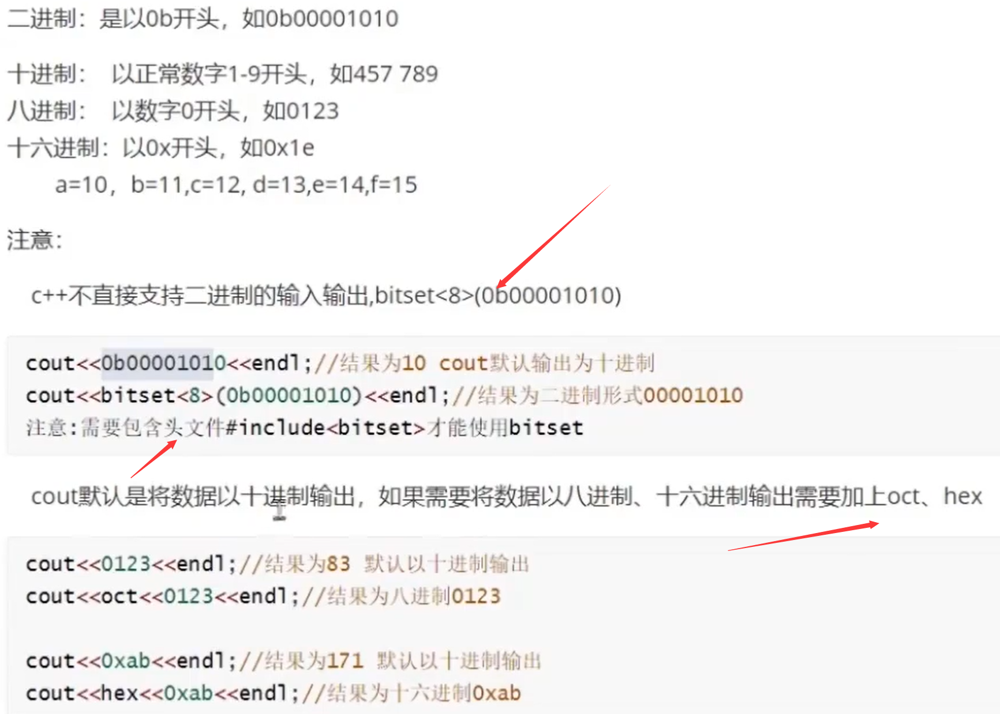

1.整型变量
C++中能够表示整型的类型有以下几种方式，区别在于所占内存空间不同：
| 数据类型 | 占用空间 | 取值范围 |
|---|---|---|
| short(短整型) | 2字节 | (-2^15 ~ 2^15-1) |
| int(整型) | 4字节 | (-2^31 ~ 2^31-1) |
| long(长整形) | Windows为4字节，Linux为4字节(32位)，8字节(64位) | (-2^31 ~ 2^31-1) |
| long long(长长整形) | 8字节 | (-2^63 ~ 2^63-1) |
1.1 常量与变量
1.1.1 变量
作用：给一段指定的内存空间起名，方便操作这段内存
语法：数据类型 变量名 = 初始值;
示例：
1 |
|
注意：C++在创建变量时，必须给变量一个初始值，否则会报错
1.1.2 常量
作用：用于记录程序中不可更改的数据
C++定义常量两种方式
- #define 宏常量：
#define 常量名 常量值- 通常在文件上方定义，表示一个常量
- const修饰的变量
const 数据类型 常量名 = 常量值- 通常在变量定义前加关键字const，修饰该变量为常量，不可修改
- 必须初始化
示例：
1 | //1、宏常量 |
1.2 整形常量

1.3 整型变量

1.4 整型变量的初始化
变量的初始化：在定义变量的时候，给变量赋值叫初始化
1 | int num = 10; //初始化 |
全局变量如果不初始化，内容为0
局部变量如果不初始化，内容为不确定（随机）
变量要初始化，一般初始化为0
1.5 整型变量的使用
变量的使用：读（取值） 写（赋值）
1 | int num = 0; |
变量的声明：对变量名以及类型提前说明，不会为该变量开辟空间
场景：先使用变量 后定义变量 必须事先对该变量进行声明
1 | //提前告诉编译器有这个变量，防止报错：变量声明 需要加extern修饰 |
变量的定义：创建变量名 系统为变量开辟空间
变量的声明：对变量的类型和名称事先说明，不会为变量开辟空间
变量的使用：对已经存在的变量的读写操作
1.6 键盘给变量赋值
作用：用于从键盘获取数据
关键字：cin
语法： cin >> 变量
cin根据变量的类型自动判断输入
示例：
1 | int main(){ |
输入给多个变量：空格隔开 或者回车
1 | int num = 0; |
2.字符类型
作用：字符型变量用于显示单个字符
语法：char ch = 'a';
注意1：在显示字符型变量时，用单引号将字符括起来，不要用双引号
注意2：单引号内只能有一个字符，不可以是字符串
- C和C++中字符型变量只占用1个字节。
- 字符型变量并不是把字符本身放到内存中存储，而是将对应的ASCII编码放入到存储单元
示例：
1 | int main() { |
ASCII码表格：
| ASCII值 | 控制字符 | ASCII值 | 字符 | ASCII值 | 字符 | ASCII值 | 字符 |
|---|---|---|---|---|---|---|---|
| 0 | NUT | 32 | (space) | 64 | @ | 96 | 、 |
| 1 | SOH | 33 | ! | 65 | A | 97 | a |
| 2 | STX | 34 | “ | 66 | B | 98 | b |
| 3 | ETX | 35 | # | 67 | C | 99 | c |
| 4 | EOT | 36 | $ | 68 | D | 100 | d |
| 5 | ENQ | 37 | % | 69 | E | 101 | e |
| 6 | ACK | 38 | & | 70 | F | 102 | f |
| 7 | BEL | 39 | , | 71 | G | 103 | g |
| 8 | BS | 40 | ( | 72 | H | 104 | h |
| 9 | HT | 41 | ) | 73 | I | 105 | i |
| 10 | LF | 42 | * | 74 | J | 106 | j |
| 11 | VT | 43 | + | 75 | K | 107 | k |
| 12 | FF | 44 | , | 76 | L | 108 | l |
| 13 | CR | 45 | - | 77 | M | 109 | m |
| 14 | SO | 46 | . | 78 | N | 110 | n |
| 15 | SI | 47 | / | 79 | O | 111 | o |
| 16 | DLE | 48 | 0 | 80 | P | 112 | p |
| 17 | DCI | 49 | 1 | 81 | Q | 113 | q |
| 18 | DC2 | 50 | 2 | 82 | R | 114 | r |
| 19 | DC3 | 51 | 3 | 83 | S | 115 | s |
| 20 | DC4 | 52 | 4 | 84 | T | 116 | t |
| 21 | NAK | 53 | 5 | 85 | U | 117 | u |
| 22 | SYN | 54 | 6 | 86 | V | 118 | v |
| 23 | TB | 55 | 7 | 87 | W | 119 | w |
| 24 | CAN | 56 | 8 | 88 | X | 120 | x |
| 25 | EM | 57 | 9 | 89 | Y | 121 | y |
| 26 | SUB | 58 | : | 90 | Z | 122 | z |
| 27 | ESC | 59 | ; | 91 | [ | 123 | { |
| 28 | FS | 60 | < | 92 | / | 124 | | |
| 29 | GS | 61 | = | 93 | ] | 125 | } |
| 30 | RS | 62 | > | 94 | ^ | 126 | ` |
| 31 | US | 63 | ? | 95 | _ | 127 | DEL |
ASCII 码大致由以下两部分组成：
- ASCII 非打印控制字符： ASCII 表上的数字 0-31 分配给了控制字符，用于控制像打印机等一些外围设备。
- ASCII 打印字符：数字 32-126 分配给了能在键盘上找到的字符，当查看或打印文档时就会出现。
2.1 字符常量
2.2 字符变量
‘\0’的ASCII码值就是0
‘\0’:字符常量（char) ASCII为0
数值0:整型常量（int) 内存的存储值为0
‘0’:字符常量（char） ASCII为48
2.3 键盘给字符变量赋值
1 | //字符型输入 |
2.4 字符大小写转换
1 | char ch = 'a' - 32;//A |
2.5 字符常量和字符串常量区别
3.实型(浮点型)
作用：用于表示小数
浮点型变量分为两种：
- 单精度float
- 双精度double
两者的区别在于表示的有效数字范围不同。
| 数据类型 | 占用空间 | 有效数字范围 |
|---|---|---|
| float | 4字节 | 7位有效数字 |
| double | 8字节 | 15～16位有效数字 |
示例：
1 | int main() { |
3.1 实型常量
不以f结尾的实型常量为double类型 如：3.14
以f结尾的实型常量为float类型 如：3.14f
指数形式：123e3代表123*10的3次方 123e-3代表0.123
3.2 实型变量
单精度实型变量：float f;占4字节 以f结尾的实型变量初始化
1 | float f = 0.0f; |
双精度实型变量：double d;占8字节 不以f结尾的实型变量初始化
1 | double d = 0.0; |
4.有符号数和无符号数
4.1 有符号数
数据二进制的最高位为符号位 其它为数据位
最高位为1 表示负数
最高位为0 表示正数
以一字节为例：xddd dddd
1111 1111-1000 0000 -127~-0
0000 0000- 0111 1111 +0~127
将-0看成-128
-128~127
4.2 无符号数
所有位都是数据位
0000 0000 - 1111 1111
0 ~255
4.3 定义有符号变量
1 | //方式一：默认方式（推荐） |
4.4 定义无符号变量
1 | unsigned int num; |
5. 转义字符
作用：用于表示一些不能显示出来的ASCII字符
现阶段我们常用的转义字符有： \n \\ \t
| 转义字符 | 含义 | ASCII码值（十进制） |
|---|---|---|
| \a | 警报 | 007 |
| \b | 退格(BS) ，将当前位置移到前一列 | 008 |
| \f | 换页(FF)，将当前位置移到下页开头 | 012 |
| \n | 换行(LF) ，将当前位置移到下一行开头 | 010 |
| \r | 回车(CR) ，将当前位置移到本行开头 | 013 |
| \t | 水平制表(HT) （跳到下一个TAB位置） | 009 |
| \v | 垂直制表(VT) | 011 |
| *\* | 代表一个反斜线字符”” | 092 |
| ‘ | 代表一个单引号（撇号）字符 | 039 |
| “ | 代表一个双引号字符 | 034 |
| ? | 代表一个问号 | 063 |
| \0 | 数字0 | 000 |
| \ddd | 8进制转义字符，d范围0~7 | 3位8进制 |
| \xhh | 16进制转义字符，h范围09，af，A~F | 3位16进制 |
示例：
1 | int main() { |
6.布尔类型 bool
作用：布尔数据类型代表真或假的值
bool类型只有两个值：
- true — 真（本质是1）
- false — 假（本质是0）
bool类型占1个字节大小
示例：
1 | int main() { |
7.其他关键字
7.1 const 修饰普通变量
1 | //const 修饰data为只读变量 data本质是变量 |
如果以常量初始化const修饰的只读变量 那么只读变量的值 事先存放在“符号常量表”中，不会立即给data开辟空间
当给data取地址时，才会给data开辟空间
如果以变量初始化const修饰的只读变量 那么只读变量会立即开辟空间（没有符号常量表）
const修饰自定义类型变量 立即开辟空间 没有符号常量表
7.2 register修饰寄存器变量
如果变量被高频率的使用 会自动将变量存储到寄存器中 目的：提高访问效率
如果用户想要将变量直接存入到寄存器中 可以加register修饰
1 | register int data = 0;//data将放入到寄存器中 |
不能对寄存器变量进行取地址操作 &data失败
7.3 volatile 关键字
强制访问内存
1 | volatile int data = 0;//对data的访问 必须对内存访问 |
防止编译器优化
7.4 sizeof测量类型的大小
作用：利用sizeof关键字可以统计数据类型所占内存大小
语法： sizeof( 数据类型 / 变量)
示例：
1 | int main() { |
整型结论：short < int <= long <= long long
7.5 typedef给已有的类型重新取个名
不能创建新类型
将长且复杂的类型名 取一个短小的名称
1 | //INT32就是int类型的别名 |
案例一：给int arr[5]取个别名
1 | typedef int MYARRAY[5]; |
案例二：给int*取个别名
1 | typedef int *MYP; |
8.类型转换
转换的两种方式
自动转换
遵循一定的规则，由编译系统自动完
强制类型转换
把表达式的运算结果强制转换成所需的数据类型
8.1 自动类型转换原则
1.占用内存字节数少（值域小）的类型，向占用内存字节数多（值域大）的类型转换，以保证精度不降低
2.转换方向：由低到高
无符号和有符号参加运算 需要将有符号转换为无符号
int和double参加运算 会将int转换为double
char和short类型参加运算 都会将自己转换为int类型
8.2 强制类型转换
(类型说明符)(表达式)
功能：
把表达式的运算结果强制转换为类型说明符表示的类型
例如：
1 | (int)p+1 对p强制转换为int类型 然后再加1 |